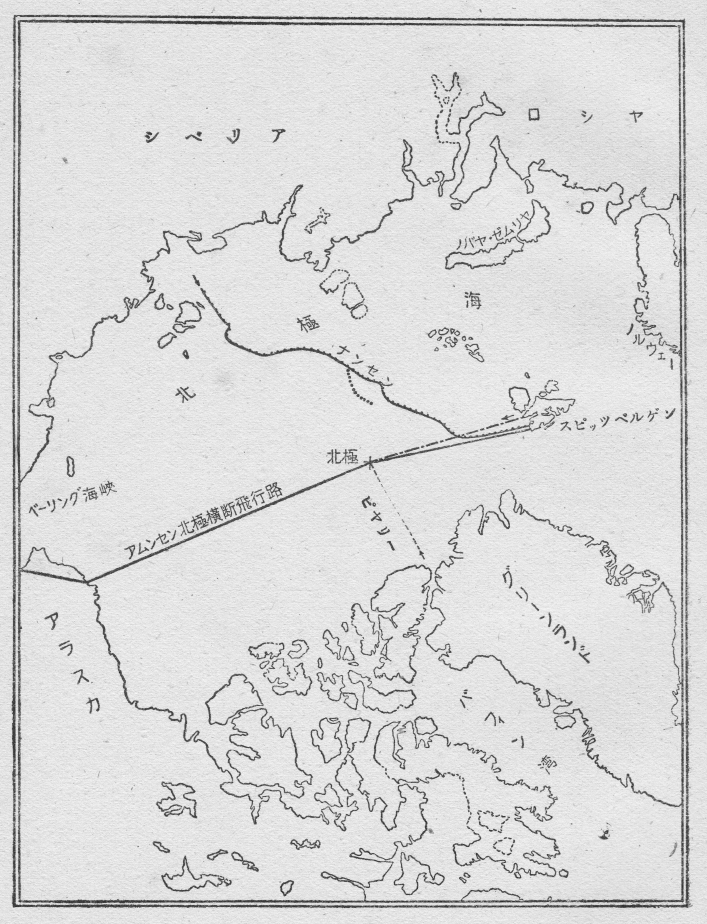

地球は、自分でくるくる回転しながら、また大きく太陽のまはりを廻つてゐます。そしてこの地球自身の回転について、たとへば
地球のこの回転のしかたは、いつも、横腹を太陽の方に向けるやうになつてゐますために、回転の軸の両端、すなはち、北極と南極との両地方は、太陽の熱を受けることが少くて、酷寒の地域となつてゐます。温度は零度以下数十度の寒さでありまして、まつたく氷と雪に蔽はれてゐます。その上、地球の回転の軸が太陽に対して少しく傾いてゐますために、一年のうち半年は、太陽が見えない夜ばかりですし、半年は、地平線に低く太陽が常に見えてゐて、明るさのにぶい昼ばかりです。
この両極地方がどういふ有様であるか、その探検のために、いろいろの企てがなされました。たとひ、人の住めない酷寒の地域であらうとも、世に知られない部分が地球の上にまだ残つてゐるといふことは、地球の主人公たる人間にとつては、甚だ残念なことでもあり、不面目なことでもあります。殊に、両極地の探検には、その荒々しい自然力を征服するといふ喜びの上に、地球の回転の軸の上に立つのだといふ楽しみまで加はります。
かくて多くの人々の探検の結果、現在では、両極地方の有様も、だいたい明かになつてをります。南極地方には大陸があると推定され、山脈や雪原や氷河があり、その氷の海岸線も半ばわかつてゐます。北極地方は海で、北氷洋と名づけられてゐますが、その中央部の海面は陸地と同じやうで、見渡す限り氷と雪の原野であります。
この両極地方の探検に、最も大きな功績を残したのは、ロアルト・アムンセンといふ人であります。
アムンセンは、千八百七十二年にノールウェーに生れましたが、少年の頃から探検家にならうと志して、スキー術を習得したり、野外生活で身体を鍛へたりしました。それからなほ船員となつて航海術をも修めました。その後、学術探検旅行に加はつて、いろいろな知識を得ました上に、大学で海洋学や気象学や磁気学などを学びました。かうした準備のあとで、彼はその生涯を探検事業に捧げました。
彼の探検の功績は幾つもあげられます。その主なものとしては、先づ北西航路の開拓があります。この北西航路といふのは、ヨーロッパの北西の方、グリーンランドとカナダとの間の島々のなかをぬけ、アラスカの沿岸からベーリング海峡を経て、東洋へ出る近みちの航路を指すのです。北氷洋に面した島々の間のこの航路は、昔から探査されてゐましたが、まだよく開拓されてゐませんでした。それをアムンセンは、僅か四十七噸の小さな船で、五人の同志を率ゐて、みごとに乗りきつたのであります。そしてこの航路開拓にあたつて、地球の磁気に関する貴重な研究をも成し遂げました。
次には、南極探検があります。この時はちやうどイギリスのスコット大佐が率ゐる大探検隊と競争の形になりましたが、アムンセンは本隊を基地に残しておき、四人の同志と共に、犬と
その次には、北東航路の探検があります。これは、北ヨーロッパから北氷洋をシベリアの沿岸づたひに進み、ベーリング海峡を経て東洋に出づる航路です。この航路も昔から探査され、既にノルデンショルドによつて突破されてはゐましたが、アムンセンは八百噸の船で同志九人を率ゐて進み、北氷洋の流氷の間をつつ切り、ベーリング海峡からアラスカへ到着しました。この航海を彼は満二ヶ年余を費して、ゆつくりとやりましたが、その間に、シベリア沿岸の地理や気候や磁気などを詳しく調査しました。
しかし、アムンセンが最も心を向けたのは北極探検であります。彼が南極探検をしましたのも、実は北極探検を準備してゐる時、すなはち千九百九年四月、アメリカのピヤリー大佐が初めて北極まで到達したと世間に発表されましたから、北極をすてゝ俄かに南極へ向つたのでありました。ところが、実際はピヤリー大佐はたゞ北極のすぐ近くまで行つたといふのが確かな事実のやうです。
アムンセンは既に北西航路や北東航路によつて、北氷洋のことを充分に研究しましたし、どうしても北極まで行つてみたくなりました。そして彼は、それを空中飛行で成就したいと考へました。
北極は、文化の開けたヨーロッパ大陸やアメリカ大陸から近いものですから、この極地方面への探検は早くから盛んになりまして、十九世紀から二十世紀へかけて、大規模な試みが幾回となく企てられました。
その上、飛行船や飛行機が出来て空中を飛べるやうになりましてからは、これが多くの探検家にも利用されてきました。千九百十四年には、ロシヤのナグルスキーが飛行機で北氷洋の流氷を調査しましたし、千九百二十四年には、チュクノフスキーが極地方面を探検飛行しました。
アムンセンも飛行機による探検を早くから考へてゐまして、千九百二十三年六月、アラスカから北極へ飛行しようと試みましたが、これは失敗に終りました。彼はなほその計画をすてず、各方面を説きまはつて、賛成者や後援者や協力者を得て、壮快なしかし危険な北極飛行を決行したのであります。
ノールウェーとグリーンランドとの間の北方に、スピッツベルゲンといふ群島があります。この群島は北緯八十度近くの北方でありますが、暖流の関係で、そこまでの航海はさほど困難でありませんから、度々、北極探検の基地となりました。
このスピッツベルゲンのキングス・ベイといふ港で、千九百二十五年の五月、アムンセンの一隊はいよいよ北極探検飛行の準備をとゝのへました。
飛行機は、ドルニエ・ワール型の二十四号と二十五号の二機、共に三百七十五馬力の発動機をつけてゐます。
二十五号機には、アムンセンが機長となり、他に操縦士と機関士とが一名づつ、二十四号機には、やはり操縦士と機関士とが一名づつで、機長はエルズワースといふアメリカ人でした。このエルズワースは、シカゴの富家の生れで、アムンセンより八歳の年下ですが、アムンセンの探検事業に深く共鳴して、遂には、その最もよい協力者となり、同伴者となつたのであります。
かくて、この二機の水上機は、五月二十一日の午後五時、多くの人々に見送られて、キングス・ベイ港内の基地から、二十五号機に続いて二十四号機が飛びあがりました。北極までほゞ一千キロあまりありますので、三千キロの飛行に必要なガソリンと、途中滞留の場合のために全員六人の三十日分の食糧とが、両機に積みこまれてゐました。
天気はすこぶるよく、空はすつかり晴れて、南西の微風でした。
飛行機は快調に進んで行きました。スピッツベルゲンの雪をかぶつた山々がまだ後方に見えてゐるうちに、前方には早くも氷原が見えてきました。いよいよ極地の氷海の上にさしかかつてきたのです。
やがて、出発後一時間ばかりの頃、どこからともなく霧が出てきて、飛行機はそのなかに包みこまれてしまひました。けれど、北極地方では天気の急変はありがちのことで、さほど心配するにも及びませんし、また、海上のことですから、山につき当る恐れもありません。霧の中を多少高く飛んで、北方へ北方へと進んで行きました。
二時間ばかりの後、霧が薄くなつて、明るくなつてきました。北極地方では、春から夏にかけて、太陽は終日沈むことがなく、夜も昼間と同じなのです。
午後十時すぎ、今まで南西の順風だつたのが、俄かに北東の逆風となり、しかもその風がたいへん強くなりました。そのために、飛行機は北へ直進することが出来ず、西へ西へと押し流されました。
かうして風とたゝかつてゐるうちに、時間は早くたち、ガソリンはひどく消費され、それに第一、今どこを飛んでゐるかその位置がわからなくなりました。何の目じるしもない大氷原の上ですから、その位置を知るには天体観測によらなければなりません。アムンセンは、このまゝ飛行を続けることの無意味と危険とを知り、どこかに着水して位置を確かめようと考へました。
しかし、見渡す限りの大氷原で、その氷の面には甚だしい
熱心に探してゐるうちに、やうやく、やゝ大きな水面が見つかりました。アムンセンは直ちに着水の命令をくだしました。
二十五号機は無事に着水しました。二十四号機も水面を見つけて着水しました。
ところが、両機は今まで広い空間を連れだつて飛んでゐたのですが、着水してみると、意外に遠く離れてゐるとみえて、互にどこにゐるのかわからなくなりました。
二十五号機の方でも、二十四号機がどうしてゐるかと心配しましたが、二十四号機の方では殊に、隊長アムンセンと離れてしまつたので、今後の行動に迷ひました。一同飛行機から出て、氷塊を登つたり下つたりして二十五号機を探しました。しかし、二十五号機の姿は見えず、氷の裂け目から大きな
然るに、北氷洋の氷塊は、潮流や風のために常に動いてゐまして、そのため、次第に見通しがきくやうになり、やがて、遠くの方に二十五号機の姿が見えました。
ゐた、あすこにゐた、といふので、すぐに手旗信号をしました。すると、二十五号機の方でも手旗信号を交はして、互に連絡がとれました。
二十四号機は、着水の際、機体を氷塊にうちあてたため少し損傷を受け、再び飛びあがるのが困難になつてゐました。その信号を受けたので、隊長のアムンセンからは、次のやうな命令がきました。
「食糧には限りがあるし、このまゝ氷の上で日を過ごすのは危険だ。隊員は二十四号機を見捨て、出来るだけの食糧をたづさへて、二十五号機へ引移つて来い。」
そこで、エルズワースたち三人は、出来るだけの食糧を背負ひ、天幕のボートとスキーとを持つて、二十五号機の方へ引移ることになりました。
氷の上は凸凹きはまりなく、海面の見える裂け目があちこちにあります。そこを三人は、互に助けあひながら、一足づつ足場を求めて、二十五号機の方へ進みました。二十五号機の方では、たゞ無事を祈るだけで、手助けのしやうもありません。そのうち、二人の者が足を滑らして水中におちこみ、氷の上に残つたエルズワースが一人で、自分も引きずりこまれるやうな危険を冒して、やうやく二人を引きあげました。さういふ困難な場所を突破して、遂に二十五号機までたどりつき、感激をこめた無言の握手が、一同の間に交はされました。
この時一同が到達した地点は、北緯八十七度四十四分で、北極からの実距離二百五十キロの所であります。
六人の隊員は、二十五号機の中に起き臥しすることになりました。そして再び飛びあがるため、氷の上に滑走路を作ることに取りかゝりました。厳格な規律のもとに仕事がはじめられました。心身ともに強健な彼等は、はてしもない大氷原のなかで、互に助けあひ慰めあひながら働きました。
飛行機で飛びあがるために必要な、長さ五百メートル幅十二メートルの平らな滑走路を作るのです。それを作るために、凸凹で不規則な氷の表面を、毎日少しづつ削つてゆくのですが、仕事が或る程度進んでも、風と雪のためにまた埋められてしまふこともあり、氷が流れて中断されることもあります。そして作つては壊れ、壊れてはまた作つてゐるうちに、たうとう七回目に、五百メートルの滑走路が出来上りました。
一同は万歳を叫んで、長い三週間の労苦をかへりみました。そして記念のため、そばの小高い氷塊の上にノールウェーの国旗をたてました。
六月十五日の朝、空は晴れ風はなぎ、飛行にはあつらへむきの天気でした。六人の隊員は不要の物を氷上にすてゝ飛行機に乗り込みました。飛行機は五百メートルの滑走路をぎりぎりまで滑り、氷塊の丘を巧みにさけて、首尾よく空中に浮きあがりました。
進路はまつすぐに南です。陸地を求めて大氷原や氷海の上を飛びました。七時間ばかり飛んだ時、叫び声があがりました。
「陸が見える。」
六人は熱心に前方を見つめました。次第に陸地の形がはつきりしてきました。波の静かな湾が見えました。この時、飛行機の舵に少し故障がありましたので、その湾内に着水することにしました。
そこは、スピッツベルゲン群島中の北東島の北岸でした。
着水して調べてみますと、ガソリンは僅かに九十リットルしか残つてゐませんでした。これでは遠くまでは飛べません。また、着水した場所は陸地から千メートル以上も離れた所でした。さて、どうしたものかと困つてゐる時のこと、沖の方に小さな汽船が見えました。
一同はたいへん喜んで、力かぎりに旗を振り、いろいろな合図をしました。汽船もこちらに気付いて近寄つて来ました。そして飛行機のなかに、垢と髯だらけの六人の者を見出しました。
この汽船は、ノールウェーの漁船シュリク号で、例年より早めに漁に出て、偶然、そこを通りかゝつたのでした。
シュリク号はアムンセン一行を収容し、キングス・ベイに向つて航行しました。
キングス・ベイの基地では、五月二十一日にアムンセンの一行が飛び出したまゝ、いつまでも戻つて来ませんので、次第に憂ひの色が濃くなつてゐました。既に万一の場合のために用意されてゐた二隻の救助船も出動し、また、ノールウェー官民の手によつて熱心に救助捜索が行はれましたが、一行の行方は全くわかりませんでした。一行の生死についていろいろの臆測がなされました。そこへ、一行六人が不意に戻つて来たので大騒ぎとなりました。
ところで、このドルニエ・ワール機による北極突進は、アムンセン自身は失敗だと謙遜して言つてゐます。しかし、その隊員一同は、氷上生活の間に絶えず海流や気象や氷塊の運動などを研究し、氷原の状態を詳しく調査して、発見する事柄が少くなかつたのです。そしてこの経験に基いて、アムンセンは慎重に次回の北極探検の計画を立てたのであります。
犬と
アムンセンも早くから同じ考へを持つてゐましたが、実際に北極探検飛行をしてみて、氷原の上で数週間の生活をした経験から、新たな考へをいだくやうになりました。北氷洋の氷原は凸凹が甚だしく、その裂け目の水面は狭く、飛行機を着ける場所がないといふことから、こんどは飛行機をすてゝ、飛行船にしてみようといふ考へなのです。
そして彼は、世界各国にあるさまざまの飛行船について、その構造と性能とを調べはじめました。
当時、イタリアの空軍は、Ｎ１号といふ飛行船を持つてゐました。千九百二十四年に作られたもので、長さ百十メートル、二百五十馬力の発動機が三個ついてゐます。アムンセンはこれを使はうと思つて、イタリア政府に交渉してみました。そしてＮ１号の設計者であるイタリア空軍のノビレ大佐と直接会見して、話はうまく進み、単に北極探検だけでなく、更にアラスカまで飛んでみようといふことになりました。それからこの飛行は、ノールウェーとアメリカとイタリアとの三国民の協同によつて行はれることになり、三ヶ国からの公私の寄附金がその費用にあてられました。
この大探検隊に、アムンセンが隊長となり、前にアムンセンと共に北極飛行を試みたエルズワースが、アメリカ側を代表して副隊長となり、飛行船の設計者ノビレ大佐が、イタリア側を代表して機関長となりました。そして、飛行船はノルゲ号と命名されました。
ノルゲ号は、ローマでいろいろ改造されました。極地を飛ぶといふ目的のために、四つの点が主として考慮されたのであります。
一、不必要な重量をへらして航続力を増すこと。
二、低温度に堪へるやうにすること。
三、気嚢その他を強くすること。
四、独りで着陸出来るやうにすること。
それらの改造が終つて、ノルゲ号は、ローマからスピッツベルゲンのキングス・ベイまで飛び、千九百二十六年五月七日に到着しました。乗組員ももうその地に集合してゐました。
この時、キングス・ベイには、アメリカのバード少佐が北極飛行を準備してゐまして、五月九日に、その飛行機でみごとに北極までの往復飛行を成し遂げました。この成功を、ノルゲ号の人々は
さて、ノルゲ号に乗りこむ人々は、前に述べました通り、隊長アムンセン、副隊長エルズワース、機関長ノビレで、その他に操縦士が四人、機関士が五人、無電技師が二人、助手が一人、新聞記者が一人、気象担任者が一人、総員十七名の一行です。国籍から云ひますと、ノールウェー人が七名、イタリア人が六名、アメリカ人が三名、スウェーデン人が一名です。それからノビレの愛犬が一匹加はつてゐます。
これらの隊員の外に、なほ多くの人々がやつて来て、出発の準備をとゝのへました。
スピッツベルゲンはまだ一面の雪と氷で蔽はれてゐました。烈風が吹きすさんで、気温は氷点下十度にくだることもありましたし、大小さまざまの氷塊はキングス・ベイの湾内に流れこんできました。そのなかで、技師や職工たちはよく働いて、格納庫につながれてゐるノルゲ号に最後の手入れをしました。
故障のある発動機もなほされました。燃料タンクは三十二個に増され、六七千キロは飛行出来るやうになりました。
荷物もすつかり積みこまれました。その主なものは、食糧品、枕、スキー、銃、ボートなどで、食糧品には、チョコレート、果物、ビスケット、ドライミルク、その他の菓子など、一人が毎日五百グラムづつ食べても、二ヶ月間は充分に保てるだけありました。そして船体には、ノールウェーとアメリカとイタリアとの三国の国旗がひるがへつてゐました。
五月十日に出発の準備はとゝのひました。アムンセンの慎重な計画に従つて、何一つ手落ちの点もありませんでした。
その晩、隊員はめいめい故郷の家族や知人たちに、勇ましい門出の記念の手紙を書きました。北極の空を突破して、その大自然の神秘を探らうとする前夜なのです。
翌朝、一同は一つの
やがて、ノルゲ号は格納庫から引き出されました。飛行の門出を祝福してくれる多くの人々と固い握手をかはして、一同は乗りこみました。
空は青く冷たく晴れ渡り、朝日の光は一面の白雪をてらしてゐます。東南東の微風です。
「引き綱を放て。」とアムンセンの命令が下りました。
そして今、千九百二十六年五月十一日午前八時五十分、ノルゲ号は静かに上空へと昇つてゆきました。

このノルゲ号の飛行について、アムンセン自身、日本の新聞に長い記事を寄せてをります。その記事のなかから、おもなところだけをつゞりあはせ、文章を少しやさしくして、実際の有様を伝へることにしませう。
「さらば文明よ。しばしの別れ。吾等はいま北極を目ざして雄々しい旅にのぼるのだ……。」
隊員はみな、この詩のやうな気持を味はつた。地上の人々の姿は見えなくなり、キングス・ベイの町も、白く輝く平野の中の一点にすぎなくなる。
氷のやうに冷たい大空の静けさを破つて、ノルゲ号の二個の発動機は爆音をたて始めた。
「いよいよ北極横断の壮図についたのだ。」
思はずかう叫んだ吾々の心には、もう不安の影さへもなかつた。一同は、はるか下方に眺められるキングス・ベイの真白な荒野をふりかへつて、勇者の気魂を深い呼吸と共に呑みこんだ。
吾々は進路をミトラ岬の方へとり、スピッツベルゲンの西海岸に沿つて航走した。青空にかゝつてゐるごく薄い雲を通してくる日光が、峰に白雪をいたゞいた山々を輝かす有様は、実に美しくまた雄大であつた。
アムステルダム島を通過してからは、太陽コンパスの観測によつて、真直ぐに北極へ向つて進んだ。
乗組員はそれぞれ受持の仕事にかゝつてゐる。大部分の者は、小さな船室にはいることになつてゐるのだが、室があまり狭いので、その中で仕事が満足に出来るかどうか疑はれた。しかし、他の所で働いてゐる人々とも、この室からは連絡がお互によくとれるので、ノルゲ号の航空はごく自由である。
乗組員一同はみな、それぞれ大切な役目を持つてゐるのだが、中にも、無電係の二人は、絶えず働いて、ほんたうに一睡するひまもなかつた。飛行中に二人が受取つた気象報告は、おそらく数百、或はそれ以上であつたらう。また、航空係員の求めによつて、無電で方位を決定した回数も決して少くはなかつた。さうした仕事のない時には、新聞記者のラム君が世界各国のおもな新聞社に発する電報に苦労させられた。この電報は、ほとんど緯度を一度通過する毎に、船中のことや、飛行してゐるあたりの氷や気象や、そのほか、人々の興味ある観察をくはしく書いて送るのであるから、たいへんな苦労となるのである。
時々、乗組員たちの緊張した気分をゆるめたり、思はず笑はせたりするものがあつた。それはノビレ大佐の愛犬で、自分も北極横断の勇者の一人であることなどは少しも知らず、椅子の上に毛布にくるまつて寝てゐた。けれど、誰もかまつてくれないと、やがて、椅子から飛びおりて、靴をくはへてふりまはしたり、あちこちもぐりこんで鳴いたりした。すると、ノビレ大佐はビスケットを与へて、大切さうに椅子の上へ抱きあげるのだつた。
船室は長さ六十呎に幅六呎で、そこで働く十幾人の苦労も大抵ではないが、機関室で働く人々の骨折も大きかつた。ノルゲ号の運命、したがつて探検隊全員の運命は、エンジンの調子にかゝつてゐて、もしや故障ではないかと、眠るまもなく気を配つてゐるのである。そのおかげで、途中で起つた少々の故障も、大事にならぬうちに修繕が出来た。
出発後一時間ばかりして、北緯八十度のスピッツベルゲンの北岸に、氷原が七八キロもつき出てゐるのが見えた。その先端を通過して、更に数分の後には、極地の大氷原の上にさしかゝつた。
薄い雲はいつしか消えて、前方も左右も、たゞ冷たい青空と白雪に蔽はれた氷ばかりである。後方にスピッツベルゲンの高い峰が僅かに見えてゐたが、それもやがて視界から去つてしまつた。陸地らしいものは全く見えず、広漠たる大氷原で、その表面は四方八方に裂けてをり、その裂け目は新らしい氷で蔽はれてゐる。
このはてしない大氷原の上を、ノルゲ号は毎時八十キロの速さで乗り切つて行く。それは実に奇怪な印象であつた。静かな青空と、寒冷な氷原と、強烈な日光。その中空のなかを進むのである。エンジンは時計のやうに規則正しく動いて止まない。
寒気は次第にはげしくなつたが、堪へられないほどではない。強い日光が窓から
吾々は飛行船上から陸地を見つけようとしたが、駄目であつた。また鳥や獣を見つけようとしたが、それも駄目であつた。北緯八十三度に達する頃、白熊や海豹の足跡が点々と見られたが、彼等は初めて聞く発動機の音を怖がつて隠れたのだらう、その姿は見えなかつた。
午後三時頃、初めて食事をとつた。キングス・ベイの人々が心を籠めて作つてくれた食物、肉類や卵やサンドウィッチは、この上もなく美味に思へた。それを味ひながら、そしていろいろな話にうち興じながら、極地の氷原の上を飛行するのは、まるで夢のやうな気持である。
北緯八十四度を過ぎる頃には、もう生物のけはひも全くなくなつた。見るからに怖しい氷原の上には、たゞノルゲ号の影だけが動いてゐる。その大きな影は、大氷塊の向うに隠れたり、あちこちが破れたり、またはつきり現はれたりして、後れずについてくる。
午後九時頃、北緯八十七度を越えた。前年の五月二十二日、飛行機で着水して氷上に生死の間をさまよつたのは、其処から五十哩ばかり西方の地点だつた。その時いつしよだつたエルズワースはじめ、他に二人の者が、今もこのノルゲ号に乗つてゐる。感慨無量なものがあつた。
ノルゲ号の速力はしばしゆるめられた。新たな追憶と厳粛な気分との時間だつた。そしてノルゲ号はまた速力を加へた。
北緯八十八度あたりまで進むと、前方は一面に霧が立ちこめてゐた。その中に乗りこんだが、霧は濃く、少しの展望もきかないので、六百メートルの高度にのぼり、更に千メートル以上の高度をとつて霧から出た。すぐ下には、濛々とした濃霧が、羊の毛を山と積んだやうに渦巻いてゐる。
吾々は次第に不安を感じてきた。いつしか北極の頂上をも過ぎて、その向う側の、人に知られぬ神秘な奇怪な地帯へ出るのではなからうか。なにか、怖しい羽目に陥るやうな気がしてきた。
その怪しい不安のなかに、二時間ほど濃霧の上を飛んだ。そしてこの時、最も力強い頼りとなつたのは、南ノールウェーからきた気象報告だつた。
「少くともアラスカのノームに至るまでの航空は追風ならん。」
無電技師がさういふ通信を受ける毎に、一同は
深い霧のところどころに、大きな空所が現はれはじめた。その隙間から氷上を眺めると、やはり陸地のないことが確かめられた。
ノルゲ号はまつしぐらに北極へと突進して行く。いつしか北緯八十九度の地点も過ぎた。進むにつれて霧は薄らぎ、十二日午前一時頃、濃霧は全く後方に去つてしまつた。たゞ薄く柔かい雲の塊りが、点々と空にたゞよつてゐるきりである。その雲に、太陽の光が輝かしくさしてゐる。おゝ、そこが目指す北極なのだ。吾々はなにか神秘な感激に酔つた。
航空中になされた諸種の観測、キングス・ベイとグリーン・ハーバーから絶えず知らせてくれた方位、それから太陽コンパスの助けによつて、吾々は遂に、五月十二日午前一時三十分、あこがれの北極頂点に達したことが確実となつた。
「北極点に到達したぞ。」
隊員一同、どつと歓声をあげた。
ノルゲ号は、北極頂点の真上から静かに、百メートル以下の高さにくだつた。
すぐそこに、過去の勇敢な人々があらゆる困難とたゝかひつゝ到達せんとした大目標が、まのあたり眺められるのだ。夢でもない、幻でもない。今や吾々の努力は遂に報いられた。隊員のうち、もう誰も言葉を発する者はなく、たゞ感激の沈黙が続いた。太陽は柔かい光線で、いとも荘厳に北極の氷原を照らしてゐる。遂に北極は征服された。
やがて、吾々は我に返つて、宿望としてゐたさゝやかな儀式を行つた。船室の小さい窓は開かれた。一同は脱帽して静かに瞑目した。先づ自分は、ノールウェー国王並に王妃から探検隊に賜はつたノールウェー国旗を、窓から北極点に投下した。次にエルズワース君は、アメリカ大統領から与へられた国旗を投下し、最後にノビレ大佐が、イタリア国王から賜はつた国旗を投下した。隊員一同は黙祷した。
北極の氷上に記念として置かれた三ヶ国の国旗、それを眺めて一同は感激の極みにあつた。この感激は言葉に尽しがたい。一生涯忘れられない厳粛な尊い気持である。
沈黙のうちに、ノルゲ号は静かに北極点の上を三回まはつた。
アムンセンは北極を征服しました。彼は今、北極の頂上にゐます。地球上どちらを向いてもみな南だといふ、不思議な地点です。さて、アムンセン自身の手になつた記事の大要はなほ続きます。
感激と沈黙の数分時がすぎて、吾々はまた新たな緊張を心におぼえた。
さうだ、吾々が今まで飛んできた場所は、だいたい人に知られてゐる所である。しかし、これから飛ばうとする場所、北極とアラスカとの間こそは、まだ誰一人見たことのない
太陽は大氷原の上を照らしてゐる。空は青く、雲は薄い。
隊員一同は、互にかたく手を握りあつた。北極点にある三ヶ国の国旗をぢつと眺めた。ノルゲ号は再び空高くまひあがる。発動機は再び動きだした。
キングス・ベイから出発以来、ノルゲ号は初めて船首を南に向けた。そしてアラスカの最北端のバロー岬を指して進んだ。
行けども行けども陸地は見出されず、展望は少しの変化もない。裂け目のある大氷原の有様は今までと同じく、日に照らされて輝いてゐる。もの狂ほしいまでに単調であるが、眺めは限りなく雄大である。
無電の機械は何の故障もなく働いてゐる。各方面から気象報告や方位報告がくる。新聞記者のラム君は、北極点での吾々の儀式や刻々の印象について、世界各国のおもな新聞社に通信した。
無電通信と気象状態とは、吾々の探検隊にとつて最も重要なものである。この二つが甚だ良好だつたので、大きな心配のたねは実際に何もなかつた。美しい空にきれぎれの雲が見える。大気は静かで、風はない。ノルゲ号は四百メートルの高度をとつて、毎時八十キロの速度で走る。
十二日の朝、隊員中の数名は、飛行船の狭い廊下に横たはつて、少しく眠らうとしてみた。出発以来、一睡もせずに働き続けて、ひどく疲れてゐたのである。ところが、凍りつくやうな寒さと、エンジンの響きと、寝場所の狭苦しさとのため、どんなにあせつても眠れなかつた。しまひには思ひ諦めて、せつなさうな顔付で起きあがつてくるその様子は、可哀さうでもありをかしくもあつた。
十二日の午前七時頃、氷の北極を通過した。こゝは、北緯八十八度、西経百八十七度の所で、北極地帯の大氷原の中心になつてゐるので、氷の北極と呼ばれてゐるのである。このあたりには、削り立つたやうな氷塊が重畳してゐて、見るだにものすごく、飛行機か飛行船によらなければ近づき難い。
この北極を通過した後、吾々は思ひ設けぬ危険に出逢つた。午前八時頃、前方に深い霧が見え、いよいよその中に突進した時、吾々は高く出て霧を避けようとした。暫くの間、虹のやうな美しい七色に染まつた霧の上に、ノルゲ号の巨体がぼんやり浮きあがつてゐるのが、まるで絵のやうに見られた。
しかし、それも束のまで、霧は次第に濃くなつてきた。その頃、無電に故障が生じて、よそからの気象報告が得られなくなつた。
外部との通信が絶望になると、吾々は泣きたいほどの不安を感じた。そして何よりもまづその故障を修理しようと努力した。
故障のもとは、一つは空中電気のためであり、他の一つは、ノルゲ号からさがつてゐるアンテナにはつた氷のためである。
吾々はアンテナを巻きあげて掃除した。また発電機にも手入れをした。しかし、それでも駄目だつたので、アメリカ政府の好意で指定されてゐる波長によつて、アラスカの諸所の無電局を幾度も呼び出してみたが、何の応答もない。
吾々はやはりノルゲ号を前進させながら、次第に高度を高めて、八百メートルにした。そして不安のうちにも氷原の観察を続けた。濃霧のうちのところどころにある空所から眺めてみると、陸地はやはりその辺には全くない。
困難は一時間毎に増してきた。厚い黒雲が空を蔽うて日光を
吾々はまづ低空飛行をやつてみた。すると、下方では雪が降りしきつてゐる。そこで、高く飛んでみたが、こんどは新たな危険に当面した。この北極横断飛行について、最も心配されたのは、大きなガス気嚢の表面に氷の層が出来はすまいかといふことだつたが、果して今、その氷の層がすごい勢ひで出来てきた。もしこのまゝにしておいたら、飛行船の重さはたちまち数噸も増すにちがひない。吾々はぞつとして途方にくれた。
機関長ノビレ大佐は、どうしたものだらうかと、気象担任のマルムグレン博士に訴へた。
「あわてる場合ではない。」とマルムグレン博士は静かに一同をなだめた。
そして彼はすぐ、ノルゲ号に種々の高度をとらせながら、船体につく霜の量を系統だてゝ観察しはじめた。その落着いた自信のある態度を見て、吾々も次第に平静になつてきた。
幾度かの詳しい観測の末、マルムグレン博士は、遂に最も安全な航空高度を決定した。それは思ひきつて高く飛ぶことだつた。果してその結論は的中した。高度が高くなればなるほど、霧が少いばかりでなく、船体につく霜も少くなつた。氷海に近いほど気温は低かつたのである。
かくてほつと一息ついたものの、難航は更に続いた。吾々は大きな雲につき当つて、その上に出ようとしたが、密雲の層はあまりに厚く、上に出るには非常にたくさんのガソリンを費さねばならないので、遂に断念して雲の中を飛んだ。
それになほ、雲や霧や霜の危険よりも数倍の危険が、吾々の心を寒くした。
ノルゲ号のプロペラや発動機に氷がついた。その氷が、廻転するプロペラのために細片となつて、船体のズックにはげしい勢ひでぶつつかり、諸所に穴をあける音が聞えてきた。
氷の細片で、もしもプロペラの葉身が損傷を受けるやうなことが起つたなら、その氷片は必ずガス気嚢にも大きな穴をあけるだらう。さうした場合には、吾々はもう飛行船を棄てゝ氷上を徒歩して、どこかの海岸までたどりつくより外に方法はない。
今、さういふ危険が起りかけた時、吾々はアラスカの北海岸から三百キロほど離れた所を飛んでゐた。この時まで吾々は、氷原をたゞ飛行探検者の立場から眺めてゐただけで、その氷の上を徒歩するなどとは夢にも考へなかつた。しかし、気嚢に穴があいたら、もうそれまでだ。断然、飛行船を棄てゝ氷原を歩かねばならない。
幸ひにも、プロペラの葉身は、氷片のために折れるやうなことはなかつたが、氷片は船体を包むズックにぶつかつて穴をあけていつた。吾々はその破れ目をけんめいに修理した。時には、破れ目があまり大きいので、飛行船の速度をゆるめて修理することもあつた。プロペラのまはりの気嚢の部分は、ノビレ大佐が最初から非常に堅固に改造しておいてくれたので、その周到な用意を吾々は感謝した。
それにしても、気嚢がいつまでも安全であるとは思へなかつた。吾々は氷片がノルゲ号に及ぼす影響を熱心に見守つた。幾度か発動機を交互に休ませて、プロペラにくつついた氷を取り除いた。そして難航を続けながら、バロー岬を求めて飛んだ。
その時、吾々は如何に陸地を熱望してゐたことであらう。
五月十三日の朝、氷原の状態から見て、いよいよ陸地も近いことがわかつた。氷の裂け目はその数を増し、遂に海水も見えてきた。
午前六時五十分、南方の水平線を望遠鏡で見てゐた者が、突然に叫んだ。
「船首に陸地が見える。」
一同は胸を躍らせながらその方向を見つめた。海岸に高くつき出てゐる氷塊か、雪に白く蔽はれてゐる陸地かほとんど区別がつかなかつた。しかし、白い雪の中に、大きな岩が黒い線となつて現はれてゐるのが見てとられた。
午前七時五十分、遂に海岸上空に達した。目的のバロー岬である。吾々はそこに着陸しようとしたけれど、沿岸一帯に濃霧が立ちこめて、展望が少しもきかない。もしこのまゝ前進したら、けはしいアラスカの山にぶつつかつて、悲惨な最期を遂げるかも知れない。
やむなく、アラスカの沿岸に沿つて、ベーリング海峡の方へ航路をとつた。そして海峡のノーム町を目指して飛んでゐるうちに、気嚢にまた氷の層が出来はじめて、船体はたえず下方へと押しつけられた。はげしい吹雪もおそつてきたので、ノーム行きを断念し、その手前のテラー村に着陸しなければならなかつた。
五月十四日午前八時、テラー村に着陸した。キングス・ベイを出発してからこゝまで、飛行距離四千百キロ、飛行時間七十一時間、その長い航空の後、再び足を大地につけた時、吾々はその大地の上に坐りこんでしまひたい気持だつた。
かくて、アムンセンの素志は貫徹されました。北極を通過する横断飛行は、幾多の困難を克服して成功しました。
ノルゲ号はアラスカの僻村テラーに着陸してから、一時間とたゝないうちに、気嚢が破れてしまひましたが、その名前は北極飛行史のなかに輝かしく残りました。そしてアムンセンの功績は、探検界の光栄となりました。
この探検飛行によつて、いろいろ学術上の発見も多く得られましたが、更になほ、アムンセンは次のやうな確信を述べてゐます。
「吾々探検隊が得た貴い経験によれば、北極地帯の気象は、現代の航空機が横断出来にくいやうなものではない。近い将来、ヨーロッパから東アジアへ、極地を通つて連絡する大航空路が開かれるかも知れない。この航空路が開かれるならば、両地間のどの航空路よりも短距離となることは云ふまでもない。吾々は、この北極航空路の開発が近いうちに成しとげられることを、信じて疑はない。」
たゞ、それは現在までまだ充分に成しとげられたとは云へません。けれども、極地飛行はアムンセン以後、非常に盛んになつて、飛行船ツェッペリン号をはじめ、多くの飛行機がそれを試みました。シベリア沿岸から北氷洋の大氷原にわたつて、飛行の跡はたくさん数へられます。千九百三十七年には、チュカロフがモスクワからアメリカ合衆国まで、北極の上空を通つて飛び、これをスターリン空路と命名してをります。
ところが、北極飛行がこのやうに盛んになつたのを、アムンセン自身は、もう見ることが出来なくなりました。
ノビレ大佐は、後に少将となりましてから、あらたにイタリア号といふ大飛行船によつて、イタリア人の一隊を率ゐて、北極探検を企てました。スピッツベルゲンのキングス・ベイを基地として、千九百二十八年の五月、極地方面の飛行にとりかゝりました。この一行が、やがて遭難して、長い間消息もたえ、六月二十日になつて、東北島の北方の氷塊の上に漂着してゐたのを発見され、数日のうちに、その隊員の大部分は救助されました。
この遭難事件の時、アムンセンは救助捜索に向つたのであります。アムンセンに対するノビレ少将の態度には、いろいろ面白くない点もありましたけれど、アムンセンは私の感情をすてゝ、嘗ての同志救助に敢然と立ち上りました。
六月十六日の午前四時、アムンセンは五人の同志と共に、水上飛行機ラタム号に乗つて、ノールウェー北岸のトロムソ港から飛びだしました。
ラタム号はこの時、救助が手後れにならぬやうにと、出発を非常に急いだため、万端の準備が充分でなかつたと云はれてをります。そのためかどうか、やがて、消息が絶えてしまひました。
トロムソの無電局では、ラタム号が出発してから、二時間と四五十分の間は、無電連絡をしてゐましたが、それきりばつたり、ラタム号からの返答がとだえてしまひました。もしその頃ラタム号に故障が起つたのだとすれば、飛行の速度から計算して、トロムソ港からおそらく二百キロばかりの海上に達してゐた筈であります。たゞ残念なことに、その方向がわかりませんでした。
イタリア号遭難の外に、ラタム号も行方不明になりましたため、世人の心痛はいつそう深くなり、各国の人々が捜索に力を尽しましたところ、イタリア号の一隊が発見されただけで、アムンセンの一行については、何の手がかりも得られず、今日に至るまで、その運命は不明のまゝであります。
後でわかつたのですが、ベーレン島の東北の沖合にラタム号の機体の破片が見出され、この事から、ラタム号は不時の故障で海中に墜落したものと推察されてゐます。
アムンセンはもう一ヶ月で満五十六歳の誕生日を迎へる筈でしたが、それを待たないで、氷海の上に永遠に旅立つてしまつたのです。
「僕は行動の最中に死にたいものだ。」
さう彼は常々、エルズワースやその他の友人たちに言つてゐました。行動とは探検のことを指すのですが、最後のその行動は、人命救助のための探査飛行となりました。
アムンセンはほんとに何処へ行つてしまつたのでせうか。
ノールウェーには、古い伝説があります。むかしオラーフ一世といふ王様がありました。勇敢な王様で、たえずバルチック海や北海の遠征に出かけてゐましたが、紀元一千年に、スウォルト島附近で大波に呑まれて亡くなりました。けれども人々は、海の荒波を見ては、王は必ずあの波の中から再び
アムンセンのことを、そのオラーフ王の再生だと思つてゐる人が、ノールウェーにはたくさんあります。アムンセンに対するかうした尊敬と信頼の気持は、ほゝゑましいものでありまして、アムンセンの霊もおそらくはほゝゑんで、氷海の上に永く留まつてゐることでありませう。